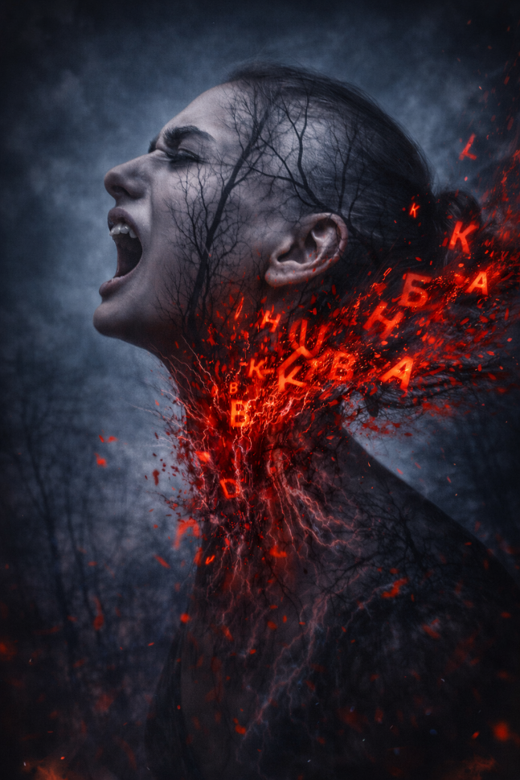

Фрагмент стихотворения
граница проходит по венам, по швам, по изгибам локтей,
взрослость – это когда тишина оглушает сильнее, чем взрыв;
не выходи из комнаты: там, в темноте, не осталось детей,
только волки в мундирах, чей вой – как надрывный призыв.
и Господь, утомившись от вечных и злых новостей,
взял перерыв.
осень горчит полынью, мешает с песком чернозем,
сквозь помехи в зените Венди поет колыбельную мгле;
мы больше не верим, мы просто покорно и тихо везем
свои хрупкие тени по этой остывшей земле.
в нашем старом пруду, под тяжелым и мутным льдом
феи застыли в стекле.
«что мои чувства? я запер их в медный сундук,
вместо сердца – осколок, вместо памяти – битый кирпич.
мы выросли, брат, из объятий и ласковых рук,
превратившись в мишени, в сухой и бессмысленный клич.
всё, что было живым, превратилось в глухой перестук,
в горечь и бич».
